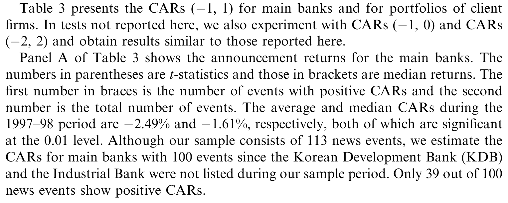
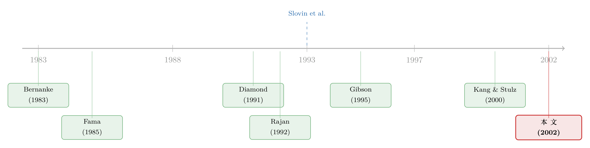

银行受了伤，谁替它疼？——一场韩国银行业危机里的「关系」估价
本文读的是 Bae, Kang & Lim (2002, Journal of Financial Economics)：当韩国的银行被一连串外生坏消息击中时，受伤的不只是银行自己，还有挂在它名下的客户公司——而这份「连带的疼痛」有多深，取决于银行和公司双方的财务健康程度。一句话，「关系」是有价的，但它的价格，要等银行倒霉的那一刻才显形。
1 一个一直被「正着说」的命题
在银行的故事里，「关系型银行」(relationship banking) 几乎是个褒义词。Ramakrishnan and Thakor (1984)、Fama (1985)、Sharpe (1990)、Diamond (1991) 这一串名字，反反复复讲的都是同一件好事：银行和企业打交道久了，就掌握了别人掌握不到的私密信息，于是它能更便宜地放贷、更informally 地介入、更快地在企业陷入困境时伸手——它替企业省下了信息不对称的成本，也省下了财务困境的成本。在德国、日本这样的「银行主导型」(bank-centered) 金融体系里，这套逻辑被认为尤其管用：企业的外部融资大头都来自它的主银行 (main bank)，主银行甚至会像管理顾问一样，往董事会里塞人、在风雨飘摇时出面救场。
这是一个很美的故事。可它有一个让人不太舒服的特征：它几乎只能被「正着」讲。
我们能观察到的，是关系存在、关系良好时的种种好处——更低的利率、更顺的续贷、公告新增贷款时那一点正的股价反应（James, 1987；Lummer and McConnell, 1989；Billett et al., 1995 都记录过）。但「关系到底值多少钱」这个问题，正面去问是问不出来的：你没法把一家公司的银行关系剪断，再看它掉了多少价。
这正是这篇论文的巧思所在：既然「拥有关系」的价值难以直接称重，那就反过来——去看「关系突然贬值」时，企业掉了多少肉。Rajan (1992) 早就提醒过，关系是把双刃剑：银行越了解你，你就越容易成为它的「人质」，它越能从你身上榨取租金。而一旦银行自己出了事、放贷能力骤降，作为客户的你，就要为「未来这段关系将不再值钱」当场买单。
2 真正的难处：因果跑反了
接着，一个自然的问题是：怎么干净地量出这份「连带的疼痛」？
困难不在于找不到「银行变差、企业也变差」的相关性——这种相关性满地都是。困难在于因果方向。Gibson (1995) 用 1,355 家日本公司发现，主银行评级低（AA−）的公司，投资比主银行评级高（AA+）的公司少 30%；Kang and Stulz (2000) 用 1,380 家日本公司发现，1990–93 年间从银行借得越多的公司，股价跌得越惨、投资砍得越狠。这些都是漂亮的相关性。
可问题是：到底是银行病了拖累了企业，还是企业先病了、把贷款拖成了坏账、再把银行拖下水？后一条路——「企业差 → 主银行差」——同样讲得通，而且很可能同时在发生。一旦因果可以双向流动，「关系的价值」这件事就解释不清了。Gibson 自己的结果里就有一处尴尬：两家同为 AA− 的银行，对企业投资的影响大小相等、符号相反，这说明他抓到的东西，未必真和主银行的财务健康紧紧绑在一起。
但真正关键的一步，是论文找到了一把绕开因果难题的钥匙：外生冲击 + 事件研究。
3 识别策略：用「银行的坏消息」做一场自然实验
论文的做法，是去搜集一大批对银行不利、但相对于客户公司而言是外生的坏消息事件，然后用 事件研究法 (event study) 去看：这些消息公布时，银行名下那一篮子客户公司的股价，会不会跟着跌。
这里的逻辑链条是这样的：如果坏消息冲击的是银行本身（比如银行被降级、银行的 BIS 资本充足率恶化、银行的一笔海外借款告吹），而这些消息并非由某一家特定客户公司的经营状况引起，那么，客户公司股价在消息公布窗口里的反应，就只能解释为——市场在重新给「这段银行关系的未来价值」定价。因果方向被钉死了：是银行的处境变化，单向地传导到了企业身上。
这正是 Slovin, Sushka and Polonchek (1993) 当年研究 Continental Illinois 银行濒临破产、再被 FDIC 救起时用的思路。区别在于：Slovin 等人手里只有一家濒死的银行，而这篇论文手里有 15 家财务状况各不相同的主银行、573 家特征各异的客户公司——这种横截面上的差异，恰恰让作者能问出一个更深的问题：连带的疼痛，是不是银行越虚弱、企业越脆弱，就越疼？
事件与样本。 样本期是 1997 年 1 月到 1998 年 12 月——韩国银行业被外部冲击打得最惨的两年。坏消息分四类：客户公司破产、主银行信用评级被下调、BIS 资本比率恶化、以及「其他」（海外借款失败、被起诉索赔等）。事件日取自两份相当于「韩国版华尔街日报」的财经报纸（Daily Economics 与 Korean Economics）首次见报的日期；为避免短期内多事件互相污染，作者剔除了首个事件后五个日历日内发生的事件。最终剩下 15 家银行、113 个事件。
主银行与客户公司的对应关系，来自韩国上市公司协会编制的《Annual Statistics》——它替每家上市公司只标一家主银行。值得注意的一个细节：在分析银行自己的公告收益时，客户公司破产是被算作银行坏消息的；但在分析客户公司收益时，作者把破产公司本身剔除了——因为破产会让公司股价暴跌，留着它们会用「破产效应」污染掉我们真正想看的「银行连带效应」。这一步筛下来，得到 573 家客户公司。
横截面回归。 拿到每个事件下客户公司（组合）的累计异常收益 (cumulative abnormal return, CAR) 后，作者把它回归到一组刻画银行健康和企业健康的变量上：银行这边用不良贷款率 (nonperforming loan ratio)、坏账率、以及银行自己在事件窗口的股价表现；企业这边用银行债务依赖度、杠杆、资产流动性、有无替代融资渠道等。标准误用 White (1980) 的异方差稳健估计。
4 这个国家，为什么是个好实验室
然后，论文花了不小的篇幅说明：为什么偏偏是韩国，能让这场实验做得这么干净。
第一，它是个不折不扣的银行主导型经济。 1990–98 年间，韩国企业的外部融资里，贷款、股票、债券分别占 62.4%、17.1%、20.5%——间接融资压倒性地碾压直接融资。
第二，也是最妙的一点：这两年的冲击足够大、足够外生。 1991–97 年间，韩国企业部门每年净增的贷款、股票、债券平均是 40 万亿、8 万亿、16 万亿韩元；可到了 1998 年，贷款这一项竟从「净增」变成了净减 37 万亿韩元。银行被一场信用紧缩 (credit crunch) 逼着猛踩刹车，企业被迫转向公司债等替代融资。换句话说，是整个银行体系出了事，而不是某家企业把某家银行拖垮了——这正是事件研究最需要的「外生性」。
第三，银行虚弱的程度,在横截面上差异巨大。 看 Table 1 的 Panel C：样本银行的平均坏账率从 1996 年底的 0.75% 翻了三倍到 1997 年底的 2.22%；平均不良贷款率从 3.70% 升到 6.28%。更触目惊心的是不良贷款 / 净资产这个比率——到 1997 年底，平均不良贷款已经是银行净资产的 1.4 倍，意味着如果把不良贷款全部核销，平均而言这家银行已经「事实上资不抵债」(de facto insolvent)。但波动极大：Korea First Bank 这一比率一年里飙升了 1,205 个百分点，而 Commercial Bank 的不良贷款率只上升了 0.48 个百分点。正是这种「有的银行病入膏肓、有的只是小恙」的横截面差异，给了作者识别「银行健康程度是否定价」的杠杆。
危机的分水岭，作者定在 1997 年 11 月 22 日——韩国向 IMF 求援的那一天。以此切开，危机前 48 个事件、危机中 65 个事件。一个耐人寻味的迹象：客户公司破产事件在危机中（38 起）是危机前（18 起）的两倍多，而银行降级事件在两段里几乎均分（24 vs. 25）。
（关于韩国这场危机如何被反复当作「天然实验室」来照公司治理与价值，可参见《危机是一面照妖镜：当「好公司」和「坏公司」第一次被分开称重》与《亏了十年，钱去哪了？》。）
5 主要结果：疼，而且是「双重条件」的疼
于是，反转——或者说，被钉实的结论——出现了。
第一拳，落在均值上。 对这 113 个银行坏消息事件，银行自己三天的平均公告收益是 −2.49%，客户公司组合的平均公告收益是 −1.26%，两者都在 0.01 水平上显著。也就是说，银行挨一记闷棍，挂在它名下的客户公司，集体跟着掉了一层皮。这本身就是「关系有价」的第一手证据：如果银行关系无足轻重，企业股价没有理由对「与我无直接关系的银行坏消息」做出反应。

Table 3: presents the CARs ((cid:1)1; 1) for main banks and for portfolios of client
第二拳，落在横截面上——这才是论文真正想讲的。 连带的疼，不是一刀切的，它是双重条件的：
- 看银行有多虚：主银行不良贷款率越高、或事件窗口里股价表现越差的，其客户公司损失越大；客户公司表现最差的日子，恰恰是它们主银行股价跌得最凶的日子。
- 看企业有多脆：从银行借得越多、杠杆越高的公司，股权跌得越狠；反过来，有替代融资渠道、资产更具流动性的公司，跌得更轻。
把这两条合起来，就是论文的核心命题：坏消息对客户公司的杀伤力，由「银行的处境」和「企业的处境」共同决定——银行越病、企业越没退路，这段关系的突然贬值就越伤人。
第三拳，落在时间上。 子样本分析显示，几乎所有结果都集中在危机期间那后半段——那段银行被巨额坏账压得喘不过气、被迫猛抽贷款的日子。危机之前，效应微弱。这和 Slovin et al. (1993) 高度吻合：只有当银行真的「放贷能力受损」时，关系的断裂才会被市场当场标价。
注意这个结论的微妙之处：它不是说「银行差，企业就一定差」，而是说「银行差且企业自己也脆弱，企业才最受伤」。一家手握闲钱、能转身去发公司债的企业，即便主银行病危，也未必很疼——因为它本来就没那么依赖这段关系。关系的价值，本质上是一份「将来还能继续从这家银行拿到钱」的期权，谁手里没有别的牌，谁的这份期权就最值钱。
6 文献脉络
这条研究的起点，其实在很「宏观」的地方。Bernanke (1983) 研究大萧条时指出，银行的成片倒闭并非源于对未来产出的预期，而是实打实地抬高了信用中介的成本、伤害了实体经济——他甚至专门反驳了「因果跑反」的可能。这给了后来者一个信念：银行的健康，本身就是一个独立的、会传导到实体的因子。
接着，是一整套把「关系」讲成好事的理论：Fama (1985) 问「银行到底有什么不一样」，Diamond (1991) 谈监督与声誉、企业在银行贷款与直接发债之间的选择，Sharpe (1990) 用隐性合约刻画客户关系。然后 Rajan (1992) 唱了反调——关系会让企业沦为银行的人质，banking 是有成本的。

真正把这件事拉进实证的，是 Slovin, Sushka and Polonchek (1993)：他们抓住 Continental Illinois 濒临破产、又被 FDIC 救起这一外生事件，发现银行的危机与获救，分别对客户股价产生了负、正的冲击。随后，Gibson (1995) 和 Kang and Stulz (2000) 把战场搬到日本，分别从「主银行评级」和「银行依赖度」切入，但都受困于前面说过的因果难题。
这篇 Bae, Kang and Lim (2002) 站的位置，就是把 Slovin 式的外生事件思路，搬到一个横截面差异极大的样本（韩国 15 家银行、573 家公司）上，从而第一次能明确地刻画「银行健康 × 企业健康」这条交互的链条。它和同期研究挪威银行危机的 Ongena, Smith and Michalsen (2000)、研究印尼-韩国-泰国银行清算的 Djankov, Jindra and Klapper (2000) 互为补充——有意思的是，Ongena 等人发现挪威企业受银行危机的连带影响小且不显著，并归因于「企业可以方便地转向股权市场融资」，这恰恰从反面印证了本文「有替代融资渠道的企业更扛打」的逻辑。（关于挪威那个反常识的结论，可参见《银行成片倒下，公司却几乎毫发无伤》。）
7 评论与延伸（Q&A + 研究方向）
(a) 几个可能的疑问
Q：「客户公司破产」既被算作银行的坏消息，又会自己暴跌，这不会让识别失效吗？
作者其实分两步走：分析银行自身收益时，破产是合法的坏消息来源；分析客户公司收益时，破产公司被整体剔除，正是为了避免「破产效应」污染。剩下的客户公司，对「别人家破产/银行被降级」这类消息的反应，才是干净的连带效应。这是个深思熟虑的样本设计，而非疏漏。
Q：113 个事件里有不少是「银行被降级」，但评级下调本身可能是市场早就预期到的，岂非不够「外生」也不够「意外」？
这是事件研究的老问题。论文用了「首次见报日」并剔除五日内的丛集事件来逼近「信息首次到达」的时点。但严格说，降级往往是滞后指标，市场可能已部分price in，这会让估计的 CAR 偏向于低估真实冲击——也就是说，−1.26% 可能是个保守的下界。
Q：客户公司股价下跌，会不会只是「行业共同冲击」，而非「银行关系」？毕竟危机里大家都在跌。
这是最该担心的混淆。CAR 用市场模型扣掉了大盘，能滤掉整体市场下行；但行业层面的共同冲击未必滤得干净。论文的横截面结果（同样的银行坏消息，依赖度高的公司跌得更多）一定程度上缓解了这一担忧——如果纯粹是行业冲击，没理由系统性地随「银行依赖度」单调变化。
Q：主银行的认定只取一家，可现实中企业往往同时和好几家银行打交道，这会不会测错了「关系」？
会引入测量误差。《Annual Statistics》只标一家主银行，而企业实际的银行敞口是分散的。这种误差通常让系数衰减（attenuation bias），同样意味着真实效应可能比报告值更强。一个更理想（但数据上极难）的做法，是用企业对每家银行的实际贷款份额加权。
Q：这和 Kang & Stulz (2000) 的日本结论，到底有没有实质区别？
有。Kang & Stulz 看的是投资与股价的长期变化，且把整个日本银行业视为「一起生病」，因而高银行依赖本身就是成本，与主银行身份无关；本文则用短窗口事件，明确把「主银行的健康程度」和「企业的健康程度」分开度量，刻画的是二者的交互。换句话说，本文回答的是「哪家银行病、哪种企业脆」这个更细的问题。
Q：−1.26% 这个量级，算大还是小？
相对于银行自身的 −2.49%，约为其一半，且在 0.01 水平显著。考虑到这只是「别人家银行出了点坏消息」的三天反应、且很可能被预期效应低估，这个量级足以说明银行关系绝非可有可无。但它也远不至于「灾难性」，这与 Ongena et al. (2000) 在挪威发现的「小而不显著」形成对照——差别恰恰可能来自两国企业替代融资渠道的丰俭。
(b) 几个可能的研究问题与提案
- 债市视角的「连带疼痛」。
- 【经济故事】本文只看了客户公司的股权反应。但银行受困时，最该被重定价的也许是客户公司的信用风险——主银行放贷能力下降，等于砍掉了企业的一道流动性后备，违约概率应当上升。
-
【可行性】中。需要客户公司的债券价格 / CDS 利差，对新兴市场（含当年的韩国）这类数据较稀疏；若放到有 TRACE 的美国市场，可用区域性银行的外生冲击做事件研究。识别上同样依赖「冲击对企业外生」。
-
「替代融资期权」的直接定价。
- 【经济故事】本文发现「有替代融资渠道的企业跌得更轻」。能否把这层「替代融资期权」显式量出来——比如用企业事后真实转向公司债 / 股权市场的规模，去解释其事件窗口 CAR 的横截面？
-
【可行性】高。韩国 1998 年公司债净增 32 万亿韩元，恰好提供了「银行抽贷、企业转债」的天然场景；可把企业危机后的债券发行量与其 CAR 做匹配回归。
-
外资持有人是不是另一道「缓冲垫」？
- 【经济故事】危机中，本国银行关系贬值，那些股东里外资占比高、或本身在海外有融资关系的企业，会不会因为「关系不止一段」而更扛打？这能把「关系价值」从单一银行扩展到企业的整张融资网络。
-
【可行性】中。需要企业层面的外资持股 / 海外融资数据；韩国在 1998 年前后正逐步放开资本市场，外资准入的时间差异本身可做识别。
-
把「主银行只取一家」的测量误差补上。
- 【经济故事】用企业对各家银行的实际贷款份额，构造一个「加权银行健康指数」，重做横截面回归，看交互效应是否被放大——这能直接检验前面提到的衰减偏误。
- 【可行性】低到中。瓶颈在于逐企业-逐银行的贷款明细，年代久远、披露有限；若有央行或监管端的授信数据则可行。
8 参考文献与我的判断
我的判断。 这篇论文的真正贡献，不在于「银行差、企业跟着差」这个并不意外的相关性，而在于它用一批外生的银行坏消息，把长期纠缠这一文献的因果反向问题摁住了，并进一步揭示出连带损失是「银行健康 × 企业健康」的交互函数——关系的价值，本质上是一份在企业别无退路时才最值钱的「续贷期权」。把这件事讲得如此干净，在 2002 年的实证条件下相当不容易。
对识别的担忧，我有两点。 其一，事件分类里「银行降级」占了近半，而评级是滞后且部分被预期的，这让窗口期 CAR 很可能低估真实冲击；好在这种偏误是保守的，不会制造出虚假的显著性。其二，短窗口事件研究最难滤掉的，是行业层面的共同冲击——危机里同业齐跌，CAR 扣的是大盘而非行业，横截面结果虽能部分缓解，但若能加入行业固定效应或同业对照组会更稳。此外，「主银行只取一家」的测量误差，意味着报告的交互效应很可能是真实效应的下界。
后续我最想看到的，是把这套框架搬到信用市场：当银行受困，客户公司的债券利差、而非股价，会怎样反应？以及，在外资持有人逐步进场的新兴市场里，「关系」是否从一段（本国主银行）变成了一张网，从而稀释了任何单一银行倒下的冲击。这些，正是当年的数据条件够不着、而今天有望做实的方向。
参考文献
- Bae, K.-H., Kang, J.-K., Lim, C.-W. (2002). The value of durable bank relationships: evidence from Korean banking shocks. Journal of Financial Economics 64(2), 181–214.
- Bernanke, B. S. (1983). Nonmonetary effects of the financial crisis in the propagation of the Great Depression. American Economic Review 73, 257–276.
- Billett, M., Flannery, M., Garfinkel, J. (1995). The effect of bank identity on a borrowing firm's equity return. Journal of Finance 50, 699–718.
- Diamond, D. (1991). Monitoring and reputation: the choice between bank loans and directly placed debt. Journal of Political Economy 99, 689–721.
- Fama, E. (1985). What's different about the bank? Journal of Monetary Economics 15, 29–40.
- Gibson, M. S. (1995). Can bank health affect investment? Evidence from Japan. Journal of Business 68, 281–308.
- James, C. (1987). Some evidence on the uniqueness of bank loans. Journal of Financial Economics 19, 217–235.
- Kang, J.-K., Stulz, R. M. (2000). Do banking shocks affect borrowing firm performance? An analysis of the Japanese experience. Journal of Business 73, 1–23.
- Lummer, S., McConnell, J. (1989). Further evidence on the bank lending process and the capital market response on bank loan agreements. Journal of Financial Economics 25, 99–122.
- Rajan, R. (1992). Insiders and outsiders: the choice between relationship and arm's length debt. Journal of Finance 47, 1367–1400.
- Ramakrishnan, R., Thakor, A. (1984). Information reliability and a theory of financial intermediation. Review of Economic Studies 52, 415–432.
- Sharpe, S. A. (1990). Asymmetric information, bank lending, and implicit contracts: a stylized model of customer relationships. Journal of Finance 45, 1069–1087.
- Slovin, M. B., Sushka, M. F., Polonchek, J. A. (1993). The value of bank durability: borrowers and bank stakeholders. Journal of Finance 48, 247–266.
- White, H. (1980). A heteroskedasticity-consistent covariance matrix estimator and a direct test for heteroskedasticity. Econometrica 48, 817–838.